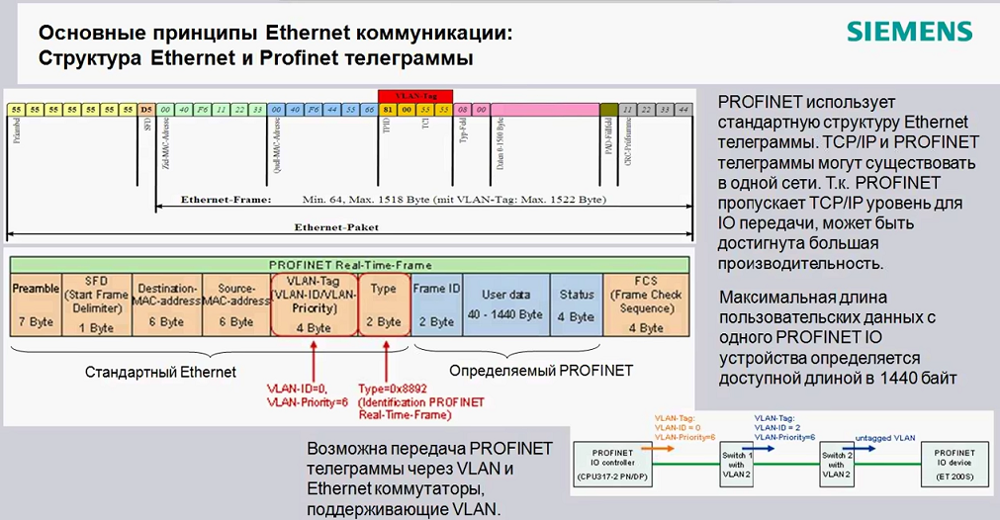
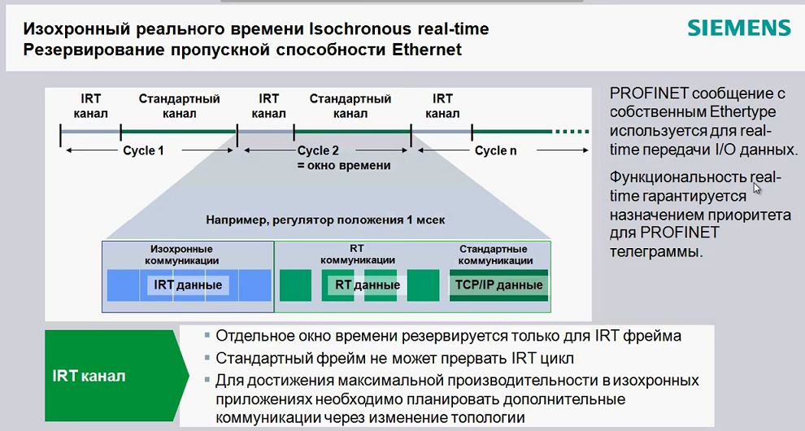
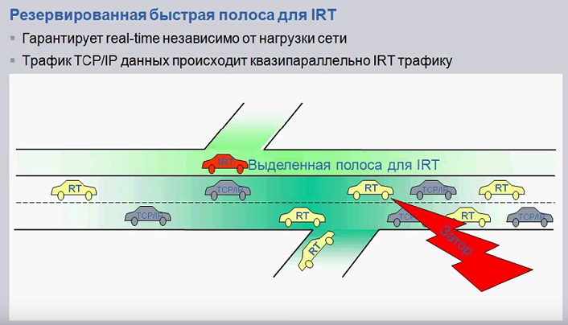
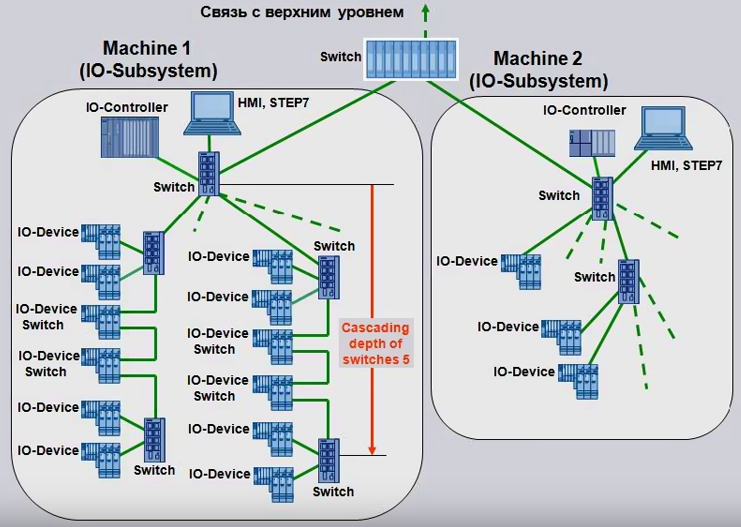
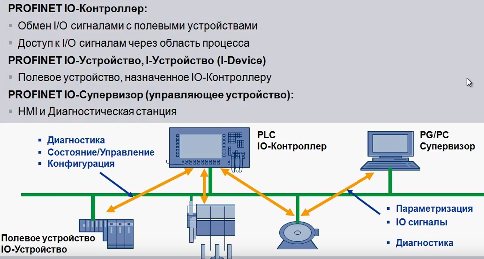
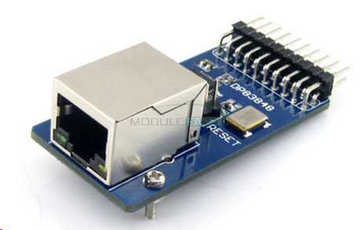

Работает в двух режимах - стандартный Ethernet и Real Time. В режиме РТ передача пакета должна выполняться не дольше 1ms.
Стандартный Eth используется для назначения параметров конфигурации, диагностических данных, авторизации.
RT - для событийных сообщений/предупреждений, циклической синхронизации и передачи данных I/O.

В ProfiNET пакеты имеют структуру, аналогичную ethernet, кроме блока VLAN-Tag (всегда должен быть VLAN-ID = 0 и VLAN-Priority = 6) и Type.


Типовая схема построения сети:


